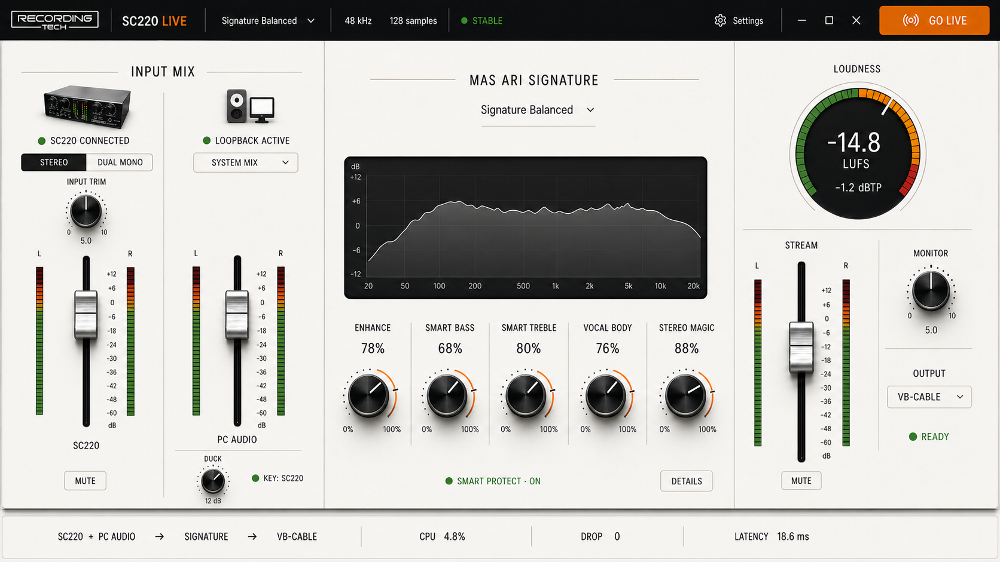

01
MAIN INPUTRecording Tech SC220
Microphones, line input, or the output of karaoke equipment connected through the SC220.
KARAOKE AUDIO MIXER FOR WINDOWS
Combine Recording Tech SC220, PC audio, and your karaoke equipment in one Windows console. Set levels, apply ASK-P Signature, and send a broadcast-ready mix to OBS or TikTok Live Studio.

HOW IT WORKS
SC220 Live is not a karaoke song player and not KTV K500 control software. It handles capture, PC audio mixing, DSP, metering, and routing into broadcasting applications.
Microphones, line input, or the output of karaoke equipment connected through the SC220.
Music, browsers, games, karaoke players, and other Windows playback applications.
Sound character, five creative macros, ducking, and level protection.
The final mix is sent through a Windows audio endpoint such as VB-CABLE.
CORE FEATURES
A native Windows application for SC220 users, karaoke creators, reviewers, hosts, and live streamers.
Control both sources independently with faders, meters, mute, and a clearly defined stream output.
Enhance, Smart Bass, Smart Treble, Vocal Body, and Stereo Magic.
See programme level and stereo peaks before audio enters the broadcast.
PC audio lowers smoothly when SC220 voice input is detected.
Windows device names are shown as they are, making routing easier to understand.
Output starts safely muted until devices and levels have been checked.
KARAOKE PROCESSOR GUIDE
Read a dedicated guide explaining karaoke processors, the Recording Tech KTV Pro K500, example streaming signal paths, and how it differs from SC220 Live.
Understand the processor, audio interface, control software, and streaming mixer without confusing their roles.
Open the KTV K500 guideSIMPLE SETUP
The installer can offer Standard VB-Audio VB-CABLE as a bridge into broadcasting software.
Download installerRun the installer as Administrator and install VB-CABLE when required.
Choose Recording Tech SC220 and the correct Windows playback device.
Use CABLE Input as the final mix destination.
In OBS or TikTok Live Studio, select CABLE Output.
CLEAR LICENSING
No credit card is required, and there is no automatic charge when the full-control period ends.
Routing, faders, meters, mute, and ducking remain active. Certain creative controls become read-only.
OFFICIAL DOWNLOAD
Use the official installer and verify the checksum when required.
c8a441f07605f48805233fbddf466312c1de733c647c95705317ad13ee2b7b04SYSTEM REQUIREMENTS
COMMON QUESTIONS
SC220 Live is a mixer and audio console for live streaming. It does not manage a song catalogue or display karaoke lyrics.
No. The KTV K500 is a separate karaoke processor. Read the KTV K500 guide to understand the role of each component.
No. Other Windows applications that accept audio endpoints can be used.
VB-CABLE carries the final SC220 Live mix into the broadcasting application.